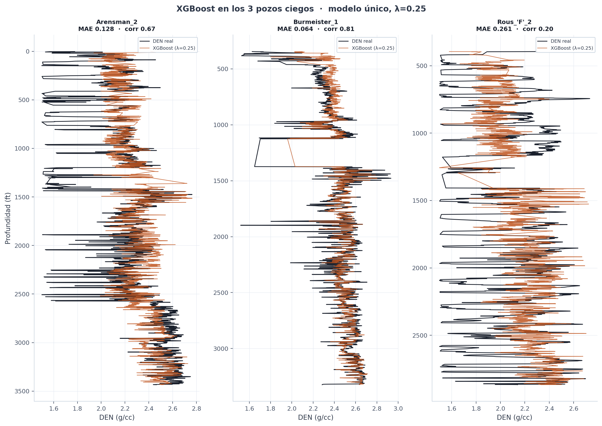
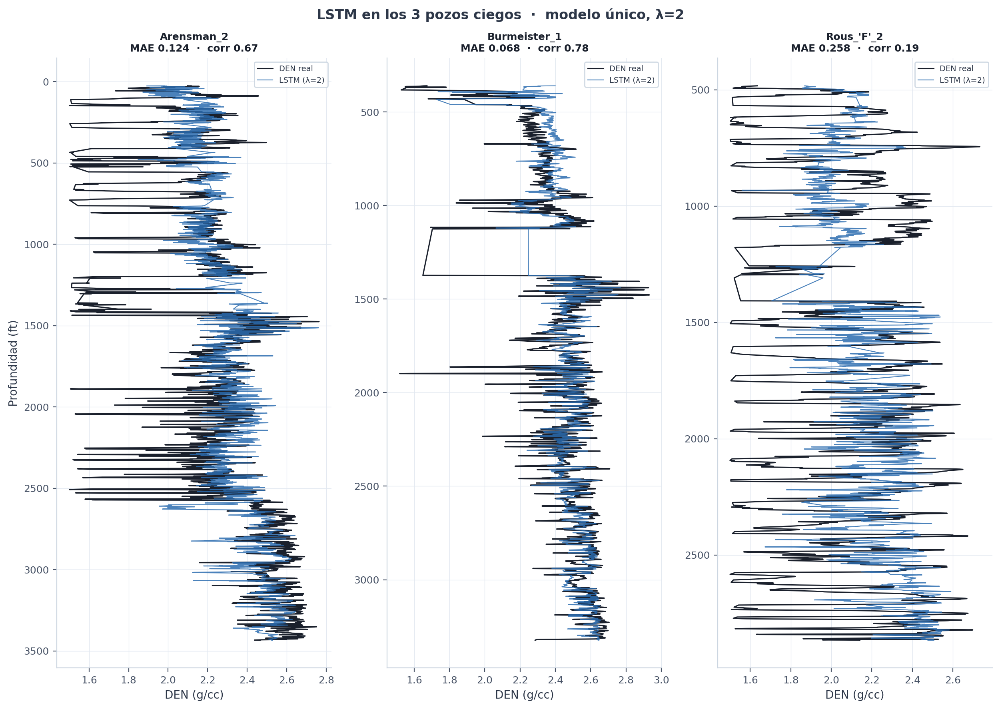

Does the physics help as much in other architectures?
When I published the main report,
José Emiliano Flores Pérez left a
LinkedIn comment with two ideas that struck me as fair: try the same physics trick on two other
models —an XGBoost and an LSTM (a recurrent neural network)— and give the model the borehole
diameter, which the caliper measures, as a hint of log quality. Instead of replying «good idea»,
I went and measured it.
3
architectures tested with the same method and protocol
0.25 – 2.0
optimal λ · changes with each architecture
0.04 → 0.29
LSTM R² on blind wells, no physics → with physics
The question I actually wanted to answer isn't «which one wins». The physics-guided MLP I
already published serves as a reference, not a rival. What intrigued me is more specific:
that physics term that helped the MLP —was it something particular to that network, or does it
carry over to other architectures? For the comparison to mean anything, I ran everything on the
report's same protocol —the same wells, the same way of evaluating—.
There's one thing I kept fixed across all three architectures, because it's the backbone of the
method: at $\lambda=0$ —the weight of the physics— each model reduces exactly to
its «data-only» version. The physics is an add-on to that model, never a different architecture.
So the improvement from $\lambda=0$ to $\lambda>0$ measures only what
the physics contributes, with nothing else changing underneath.
The experiment design
I wanted the only thing changing between the three models to be the architecture and the weight
of the physics. So three pieces are identical across all of them.
The first is the caliper as a new input. The comment suggested a bad-hole flag —a
yes/no mark of «there's washout here»—. I liked the idea, but a flag forces me to decide by hand
from what diameter I count a stretch as washout, and that threshold is debatable. So I
took a more practical shortcut: instead of building the flag, I feed the caliper directly —the
log of the borehole diameter— as a sixth input (I call it DCAL_NORM), and let the
model learn on its own where the enlarged hole makes the density less reliable. The same signal,
with no invented threshold.
The second is the physics term —the density–neutron relation I calibrated from data in the
report—, which enters each model according to how it learns. The LSTM, like the MLP, trains by
minimizing a cost function via gradient descent: there the physics term is just one more summand
in that function, and training itself takes care of differentiating it. XGBoost doesn't learn
that way. It doesn't differentiate a cost function with autograd; it builds trees one at a time,
and at each step it only needs two numbers per sample: the slope (gradient) and the curvature
(Hessian) of the error with respect to the current prediction. I can't just «hand it» a cost
function and let it differentiate. The solution was to write a custom objective: I derived the
gradient $g$ and Hessian $h$ of the combined data-plus-physics error by
hand —equation (1)— and hand them to XGBoost each round.
$$g = (\hat y - y) + \lambda\,w\,(\hat y - f_\text{phys}), \qquad h = 1 + \lambda\,w$$
(1)
Since the density the physics expects, $f_\text{phys}$, is a fixed value per sample,
those derivatives come out simple and the Hessian stays positive, so training is stable; and at
$\lambda=0$ the objective is again exactly standard regression. In all three models,
the caliper weight $w$ switches the physics off where the hole is enlarged, just like
the PINN.
washout
A stretch where the borehole wall caves in and the hole widens; there the measured density is
unreliable. The caliper (borehole diameter) detects it.
gradient and Hessian
The slope and curvature of the error with respect to the prediction. XGBoost needs them each
round to decide how the next tree grows.
LSTM
A recurrent neural network that processes a sequence —here, a well's logs in depth— carrying
memory from one point to the next.
The third is the way of evaluating, which I didn't touch: Leave-One-Well-Out over 27 wells —I
train on 26 and predict the one I left out, one by one—, the same 3 «blind» wells set aside from
the start, per-well normalization and errors in g/cc. If I changed the protocol, the comparison
with the MLP would be worth nothing.
On size: the models are deliberately modest. I wasn't after the biggest model, but the
one most comparable to the report's MLP —a single-layer LSTM, an XGBoost of shallow trees—. The
point wasn't the power, it was the clean comparison.
And yes, logs are noisy —a well measurement is never an exact value, it carries tool noise and
borehole-condition noise—. I didn't ignore that; I treated it as data quality. The
caliper weight lowers the physics' confidence right where the measurement is worst, and on
purpose I report the blind wells two ways (averaging 27 models and with a single one) to see how
much of the gain is signal and how much is noise. Modeling that uncertainty explicitly —having
the model say not just a number but how much it trusts it— would be the next step; it didn't
make it into this experiment.
One last decision, and it ended up mattering more than I expected. In petrophysics, a
correlation —say, estimating density from the neutron— is almost never applied «off the shelf»:
you calibrate it to the well, the tool and the log quality, because how much you can trust it
depends on the context. The same goes for $\lambda$ —it's how much weight I give the
physics versus the measured data—, so I didn't take for granted that the MLP's value (0.5) would
work for the others: I calibrated it by optimizing $\lambda$ per architecture,
testing a range of values.
The first thing I saw: each architecture wants its own $\lambda$
This is what surprised me most. Optimizing the weight of the physics in cross-validation
—testing a range of $\lambda$ values—, the three curves have different shapes: each
model «listens» to the physics in its own way.
Model
Metric
No physics (λ=0)
With physics (best λ)
Best λ
MLP / PINN (reference)
MAE
0.1396
0.1347
0.5
MLP / PINN (reference)
R²
0.276
0.327
0.5
XGBoost
MAE
0.1286
0.1284
0.25
XGBoost
R²
0.377
0.376
0.25
LSTM
MAE
0.1484
0.1299
2.0
LSTM
R²
0.168
0.337
2.0
Cross-validation MAE versus $\lambda$. The star marks the
$\lambda$ I chose in each case. What counts is the shape of each curve.
Three different behaviors, and when I stop to think them through, all three make sense.
XGBoost barely moves: its curve is flat. It already starts from the best error of the
three without physics, because the trees squeeze tabular structure very well —they find on their
own a good part of what the physics would tell them—. It's not that the physics gets in the way;
it's that there was little new left to give it.
The LSTM is the opposite case, and the one I liked most: without physics it's the worst of
the three, but the physics lifts it up to par, and the more I add, the better —it keeps gaining
up to $\lambda=2$, four times the MLP's value—. And there's an explanation. The LSTM
learns by reading each well's depth sequence, pattern by pattern; with so few wells to train on,
it ends up fitting the specific sequences it saw and struggles to carry them over to a new well
—high variance, poor generalization—. The physics term acts right on that weakness: it imposes
the density–neutron relation, which holds in any well regardless of what the network memorized,
and gives it the frame the data, being scarce, can't. That's why it benefits the most and admits
the most physics weight: it's the one flying most blind, so it's the one a well-independent guide
helps most.
The MLP sits in the middle, where I already knew it: a clear improvement that settles near
$\lambda=0.5$.
The takeaway I'm left with is that there's no universal $\lambda$. The harder the
problem is for the architecture on its own, the more physics weight it admits and the more it
gains. Copying the MLP's $\lambda$ onto the LSTM would have left almost all the
improvement unclaimed.
The test I cared about: the 3 blind wells
Cross-validation measures how it generalizes within the field, but the acid test is the 3 wells
I set aside from the start, which no model ever saw. As in the report, I predict them two ways
—averaging the 27 models and with a single model trained on the 27 wells— so as not to trust a
single number.
Model · evaluation
Metric
No physics (λ=0)
With physics (best λ)
XGBoost · average of 27
MAE
0.1510
0.1501
XGBoost · average of 27
R²
0.285
0.290
XGBoost · single model
MAE
0.1514
0.1509
XGBoost · single model
R²
0.282
0.285
LSTM · average of 27
MAE
0.1519
0.1475
LSTM · average of 27
R²
0.262
0.298
LSTM · single model
MAE
0.1754
0.1500
LSTM · single model
R²
0.040
0.287
MLP / PINN · average of 27 (ref.)
MAE
0.157
0.153
MLP / PINN · single model (ref.)
R²
0.171
0.257
No physics (gray) versus its best physics (green), in cross-validation and on the 3
blind wells, for each architecture.
The case I like most is the single-model LSTM: without physics it barely generalizes —an
$R^2$ of 0.04, it almost never lands it—, and with physics it jumps to 0.29, on par
with the rest. The physics doesn't give the network more power, it gives it a compass when
a new well's data isn't enough. In XGBoost the external gain is small, but it points the same
way, consistent with its flat curve.
And to not stop at the numbers, here's the density each model predicts —at its best
$\lambda$— on the 3 blind wells, against the curve actually measured in each.

XGBoost ($\lambda=0.25$), single model: real versus predicted density in
depth, on the 3 blind wells.

LSTM ($\lambda=2$), single model: real versus predicted density in depth,
on the 3 blind wells. Burmeister_1 tracks best; Rous_'F'_2 is the hardest.
Did the caliper help at all?
The other half of the comment was that hint about log quality. XGBoost has a handy advantage: it
lets you see, unambiguously, how much each input weighs in its decisions.
Average importance of the 6 inputs across the 27 XGBoost models; the caliper
(DCAL_NORM) highlighted.
And the caliper carries real weight. In the average importance across the 27 models, neutron
porosity (NPHI) leads —what the density–neutron physics calls for—, followed by one of the
resistivities (RILM); and right after, in third place, comes the caliper, ahead of RT, GR and
SP. It's not the input that leads —nor should it be—, but it's not decorative either: the model
genuinely uses it to adjust its confidence where the hole is enlarged, which is exactly what I
was after.
What I take away
The main thing: the method transfers. It wasn't an MLP trick. Across all three architectures the
physics matches or beats the «data-only» model, and breaks none of them. It's a method idea, not
one specific to a single model —and that's exactly what I wanted to check—.
The second, which I didn't expect this clearly: the optimal $\lambda$ is specific to
each architecture, and it correlates with how hard the problem is for each one alone. Flat in
XGBoost, in the middle for the MLP, high and very profitable in the LSTM.
And one of honesty: in absolute terms, the gains on blind wells are modest —generalizing to a new
well with so few training wells is still hard, and I'm not going to sell it as solved—. But the
direction is the same across the whole experiment, and that already tells me something.
✓The physics-informed term wasn't exclusive to the MLP: it transfers to XGBoost
and to the LSTM, breaking neither. What changes with the architecture is how much physics
it admits —its optimal $\lambda$—, and that has to be calibrated in each case.
All the code for these experiments and the raw results are in the
repository, under the same
protocol as the main report. If you can think of another architecture worth testing the idea on,
I'm listening.